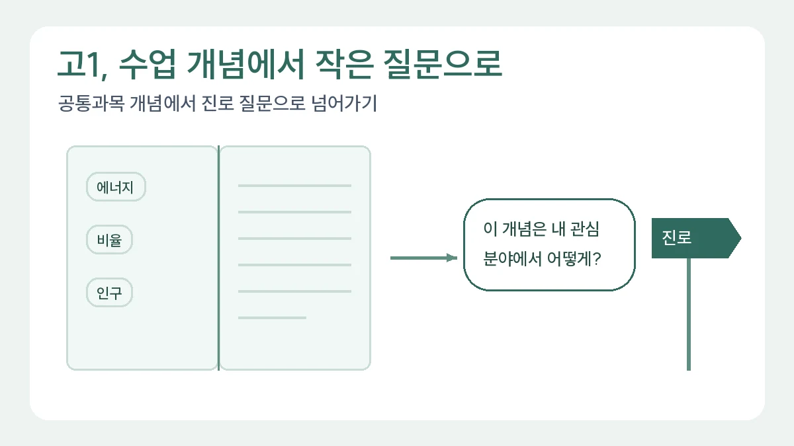

고1 탐구보고서 시작법: 공통과목에서 진로 질문으로 넘어가기
고1은 거창한 전공 주제보다 수업 개념에서 출발해 작은 진로 질문을 만드는 것이 좋습니다.
목차
- 관심 분야보다 수업에서 생긴 의문을 고르기
- 큰 주제를 자료로 답할 수 있는 질문으로 바꾸기
- 자료를 모을 때 출처와 조건을 함께 적기
- 초안이 막혔을 때 고치는 방법
- 진로는 결론의 다음 질문으로 연결하기
- 고1 탐구보고서 주제 15선: 공통과목에서 출발하는 질문
- 교실 속 문제 연구 예시: 쉬는 시간 환기 전후 교실 온도
- 고1 세특 준비: 공통과목 탐구로 3년 학습 흐름 만들기
핵심 요약
- 공통과목 개념에서 출발하기
- 한 문장 탐구 질문으로 좁히기
- 진로는 결론에서 가능성으로 연결하기

고1 탐구보고서는 진로를 확정했다는 증명이 아니라, 공통과목에서 배운 개념으로 궁금한 일을 설명해 보는 글입니다. 처음에는 개념 하나, 대상 하나, 확인할 자료 하나면 충분합니다. 아래는 실제 학생의 수행 기록이 아닌 교육용 작성 연습 예시입니다. 자료를 확인하기 전에는 결과를 미리 쓰지 않습니다.
1. 관심 분야보다 수업에서 생긴 의문을 고르기
노트에서 이해는 했지만 설명이 더 필요한 대목을 찾으세요. 사회의 인구 구조, 과학의 에너지 전환, 국어의 매체 표현처럼 이미 배운 개념을 출발점으로 삼습니다. ‘환경이 중요하다’는 의견보다 ‘같은 제품의 환경 안내 문구가 왜 다를까?’라는 의문이 조사로 이어지기 쉽습니다.
- 인구 구조: 내가 사는 지역의 연령별 인구는 두 시점에 어떻게 달라졌을까?
- 에너지 전환: 특정 기기의 설명서에서는 에너지 손실을 어떻게 설명할까?
- 매체 표현: 같은 내용을 전달하는 두 안내문은 무엇을 먼저 강조할까?
후보마다 수업 개념을 설명할 수 있는지, 원자료를 구할 수 있는지, 학교 과제 기간 안에 끝낼 수 있는지를 따져 보세요. 세 조건 중 하나라도 막히면 주제를 더 작게 바꿉니다. 낯선 전문용어가 많다는 이유만으로 깊은 질문이 되는 것은 아닙니다.
2. 큰 주제를 자료로 답할 수 있는 질문으로 바꾸기
인구 구조를 골랐다면 ‘저출생 문제 해결’에서 시작하지 마세요. 정책 전체를 평가하려면 처음 보고서에서 감당하기 어려운 근거가 필요합니다. ‘우리 지역 인구 변화’로 줄인 뒤에도 지역, 시점, 연령 구분이 남아 있습니다.
교육용 질문 수정 예시: ‘저출생은 왜 문제일까?’ → ‘한 시군구의 두 연도 자료에서 연령별 인구 구성은 어떻게 달라졌을까?’
먼저 같은 통계표에서 비교 가능한 두 연도를 찾고 지역을 하나만 정합니다. 교과서의 연령 구분을 사용할지, 통계표의 구분을 따를지도 적으세요. 이 질문은 변화의 모습은 확인할 수 있지만 출산, 이동, 일자리 중 무엇이 원인인지까지 입증하지는 못합니다. 질문에 맞춰 결론의 범위도 작게 잡아야 합니다.
3. 자료를 모을 때 출처와 조건을 함께 적기
국가통계포털 KOSIS에서 ‘연령별 인구’와 지역명을 검색해 보세요. 표 제목, 작성 기관, 기준 시점, 단위, 연령 구간을 먼저 읽습니다. 선택한 두 연도의 지역 경계와 집계 기준이 같은지 확인하고, 비교가 어렵다면 같은 기준을 제공하는 다른 기간을 고릅니다.
행정안전부 주민등록 인구통계에서는 ‘연령별 인구현황’을 찾아 지역과 조회 시점을 확인할 수 있습니다. 두 사이트에서 찾은 수치라도 모집단과 기준일이 다르면 바로 합치지 마세요. 교과서 개념 설명과 원자료를 함께 쓰고, 기사나 블로그는 검색어를 찾는 보조 자료로만 활용하는 편이 안전합니다.
- 출처 메모: 기관명, 표 제목, 자료 기준일, 조회 조건, URL, 실제 열람일.
- 내용 메모: 자료에서 직접 확인한 사실과 내가 붙인 해석을 별도로 기록.
- 빈칸 메모: 아직 확인하지 못한 원인이나 빠진 집단을 표시.
4. 초안이 막혔을 때 고치는 방법
자료를 모았는데 제목이 서로 다르거나 단위가 맞지 않는다면 자료 수를 늘리기보다 한 통계표 안에서 비교하세요. 조사 실패를 ‘자료가 부족했다’로 끝내지 않고 ‘집계 기준이 달라 같은 표의 두 시점으로 범위를 바꿨다’고 기록하면 수정 이유가 남습니다. 이는 연습용 수정 상황이며 실제 수행 사실로 옮겨 쓰면 안 됩니다.
서론 연습: ‘인구 구조를 배우며 전체 인구만으로는 연령 구성을 알 수 없다는 점이 궁금해졌다. 한 지역의 두 시점을 같은 기준으로 비교하려 한다.’
본론에는 사용한 기준과 자료에서 확인한 차이를 쓰고, 결론에는 그 차이가 질문에 어떤 답을 주는지 적습니다. 확인 전 초안에는 ‘자료 입력 후 작성’이라고 남기세요. 변화가 작거나 예상과 달라도 오류라고 지우지 말고 조회 조건부터 다시 확인합니다.
5. 진로는 결론의 다음 질문으로 연결하기
‘이 활동으로 행정 전문가의 역량을 갖췄다’보다 ‘인구 구성에 따라 지역 서비스의 필요가 달라질 수 있는지 더 알아보고 싶다’가 탐색 단계에 맞습니다. 진로를 정하지 않았다면 자료를 읽으며 새로 궁금해진 점만 적어도 됩니다. 제출 전에는 질문, 사용한 자료, 확인한 사실, 아직 설명하지 못한 점을 각각 한 문장으로 말해 보세요.
이 글은 첫 질문을 만드는 데 집중합니다. 서론부터 결론까지의 전체 구조는 탐구보고서 처음 작성하는 법, 과목 개념과 비교 방법을 더 정교하게 고르는 단계는 고2 선택과목 기반 작성법에서 이어서 확인하세요.
6. 고1 탐구보고서 주제 15선: 공통과목에서 출발하는 질문
아래 15개는 공통과목에서 배운 개념 하나와 고1이 직접 구할 수 있는 자료 하나를 짝지은 출발 질문입니다. 수업에서 실제로 배운 범위를 먼저 확인하고, 배우지 않은 개념은 추가 학습으로 표시하세요.
- 공통국어: 같은 사건을 다룬 두 기사의 제목은 어떤 낱말로 관점을 드러내나? · 자료: 같은 날 기사 2건
- 공통국어: 학교 가정통신문 두 건의 문장 길이와 어려운 낱말 수는 어떻게 다른가? · 자료: 공개된 안내문
- 공통수학: 휴대전화 요금제 두 개를 함수로 나타내면 어느 사용량에서 요금이 같아지나? · 자료: 공개 요금표
- 공통수학: 경우의 수를 배웠다면, 학급 자리 배치 규칙에 따라 가능한 배치 수가 어떻게 달라지나? · 자료: 직접 정한 규칙
- 공통수학: 학급 30명 중 생일이 같은 사람이 있을 확률은 얼마나 될까? (계산하면 약 70.6%) · 자료: 계산만
- 통합사회: 우리 지역 공공도서관 이용 통계로 ‘접근성’을 어떻게 설명할 수 있나? · 자료: 지자체 공개 통계
- 통합사회: 같은 상품의 가격은 가게 유형에 따라 얼마나 다른가? · 자료: 직접 조사한 가격표(가게 이름은 공개하지 않기)
- 통합과학: 표면 색이 다른 두 판은 햇빛 아래에서 온도가 얼마나 다르게 오르나? · 자료: 온도계 측정
- 통합과학: 물이 증발하는 속도는 그릇의 표면적에 따라 어떻게 달라지나? · 자료: 같은 양의 물, 그릇 2~3개
- 과학탐구실험: 같은 측정을 세 번 반복하면 값이 얼마나 흩어지나? · 자료: 반복 측정 기록
- 한국사: 학교 도서관의 두 역사책은 같은 사건을 어떤 사료로 설명하나? · 자료: 책 2권의 해당 쪽
- 한국사: 지역 문화유산 안내판의 설명은 공식 문화유산 정보와 어떻게 다른가? · 자료: 현장 사진, 공식 정보 화면
- 공통영어: 같은 뉴스를 다룬 한국어 기사와 영어 기사의 제목은 무엇을 먼저 말하나? · 자료: 기사 2건
- 공통영어: 영어 교과서 지문 하나를 두 번역 도구에 넣으면 어떤 표현이 달라지나? · 자료: 지문 1개, 번역 결과 2개
- 통합사회+통합과학: 쉬는 시간 환기 전후 교실 온도는 얼마나 달라지나? · 자료: 학급 온도계 기록(아래 7절 예시)
15개 모두 결론을 미리 정하지 않고 ‘어떻게 다른가, 얼마나 달라지나’를 묻습니다. 고1에서는 원인을 증명하기보다 차이를 정확히 기록하는 것만으로도 충분히 좋은 출발입니다. 계열별로 더 넓은 주제는 탐구보고서 주제 50선에서 이어 보세요.
7. 교실 속 문제 연구 예시: 쉬는 시간 환기 전후 교실 온도
교실에서 바로 시작할 수 있는 작은 연구의 전체 흐름을 보여 드립니다. 아래 숫자는 편집팀이 만든 가상 기록이며 실제 측정 결과가 아닙니다. 창문을 여닫는 일은 담당 선생님의 허락과 안전 수칙을 먼저 확인하세요.
- 질문: 2교시 뒤 쉬는 시간 10분 동안 창문을 열면 교실 온도는 얼마나 내려가나?
- 방법: 학급 온도계를 칠판 옆 같은 위치에 두고, 5일 동안 쉬는 시간 시작과 끝에 온도를 기록한다. 그날의 바깥 날씨와 교실 인원도 함께 적는다.
- 가상 기록: 환기 전 24.1·23.8·24.5·24.0·23.6℃, 환기 후 22.9·22.7·23.6·22.8·22.5℃. 날마다 차이는 1.2·1.1·0.9·1.2·1.1℃이고 평균 차이는 1.1℃다.
- 해석: 이 교실과 이 5일 조건에서는 환기 뒤 온도가 평균 1.1℃ 낮았다.
- 한계: 바깥 기온, 교실에 남아 있던 인원, 온도계 위치가 결과에 영향을 줄 수 있다. 다른 교실이나 계절로 넓혀 말할 수 없다.
- 다음 질문: 창문을 연 폭에 따라 온도 변화가 달라질까?
결론 문장 고치기 — 수정 전: ‘환기를 하면 교실이 시원해진다는 것을 증명했다.’ 수정 후: ‘5일 동안 같은 위치에서 기록한 가상 자료에서 쉬는 시간 환기 뒤 온도가 평균 1.1℃ 낮았다. 바깥 기온을 함께 비교하지 않아 원인을 환기 하나로 단정하지는 않는다.’
이 정도 규모라도 질문·방법·기록·해석·한계·다음 질문이 모두 들어 있으면 보고서의 뼈대가 완성됩니다. 실험 없이 문헌이나 통계로 시작하고 싶다면 탐구 방법 문단 쓰는 법의 ‘실험 없는 탐구보고서’ 절을 참고하세요.
8. 고1 세특 준비: 공통과목 탐구로 3년 학습 흐름 만들기
고1 세특은 학생이 쓰는 글이 아닙니다. 과목별 세부능력 및 특기사항은 교과담당교사가 학생참여형 수업과 수업에 연계된 수행평가에서 관찰한 내용을 바탕으로 학기별로 입력합니다(2026 학교생활기록부 기재요령 PDF 123쪽, 인쇄 117쪽).[1] 2026학년도 1~2학년이 듣는 공통과목은 1과 2를 합쳐 500자 안에서 기록됩니다(PDF 214쪽, 인쇄 208쪽).[1] 그래서 고1이 준비할 수 있는 것은 문장이 아니라, 수업에서 생긴 질문과 그 질문을 따라간 흔적입니다.
고1에 진로를 정해야 기록이 이어진다는 걱정도 원문과는 거리가 있습니다. 진로희망은 진로활동 특기사항의 ‘희망분야’ 칸에 입력하지만 상급학교 진학 때 전형자료로 제공하지 않고, 정하지 못했다면 ‘진로탐색 중임’처럼 입력할 수 있습니다(PDF 91쪽, 인쇄 85쪽).[1] 학과 이름보다 어떤 질문을 계속 붙잡았는지가 3년 흐름의 실마리가 됩니다.
아래는 6절의 15개 질문 가운데 하나를 3년으로 이어 본 교육용 가상 흐름입니다. 실제 학생 기록이 아니며, 학년별 과목은 학교 편성에 따라 달라집니다.
- 고1 통합사회: 우리 지역 공공도서관 이용 통계로 ‘접근성’을 어떻게 설명할 수 있나? 남길 것: 사용한 통계표 이름, 기준 연도, 접근성을 무엇으로 정의했는지 적은 메모.
- 고2 확률과 통계(선택한 경우): 고1에서 쓴 ‘이용 건수’가 인구 규모 차이를 가린다는 한계를 이어받아 인구 1,000명당 이용 건수로 다시 비교한다. 남길 것: 지표를 바꾼 이유 한 문장.
- 고3 사회문제 탐구 등 관련 과목: 지표 차이가 운영시간이나 교통 같은 조건과 함께 나타나는지 살펴보되 원인은 단정하지 않는다. 남길 것: 3년 동안 질문이 어떻게 좁아졌는지 정리한 한 쪽.
흐름이 생기는 이유는 주제가 같아서가 아니라 앞 학년의 한계가 다음 질문이 되었기 때문입니다. 고1 때 할 일은 세 가지면 충분합니다. 수업 중 생긴 질문을 날짜·단원과 함께 적고, 수행평가 산출물과 원자료를 학기마다 한 폴더에 모으고, 보고서의 한계 문장 하나를 다음 학기에 다시 읽습니다. 교사에게 특정 문구를 요청하거나 교사 문체의 세특 문장을 미리 만들어 두는 일은 권하지 않습니다.
학생 메모 고치기(가상) — 수정 전: ‘도서관 접근성 탐구로 사회문제 해결 역량을 길렀다.’ 수정 후: ‘두 지역의 도서관 이용 건수를 비교했지만 인구가 달라 그대로 비교하기 어려웠다. 다음에는 인구 1,000명당 값으로 다시 계산해 보고 싶다.’
수정한 메모에는 역량을 스스로 평가하는 말이 없습니다. 대신 무엇을 했고 어디서 막혔는지가 남아 있어 2학년 선택과목에서 이어 갈 지점이 보입니다. 고2에서 이어 가는 방법은 고2 선택과목 기반 탐구보고서 작성법 7절, 세특과 보고서의 관계는 탐구보고서와 세특 연결 기준에 정리했습니다.
근거: [1] 교육부 — 2026학년도 학교생활기록부 기재요령(고등학교, PDF). 확인일 2026-11-13.
관련 글

탐구보고서 쓰는 법: 형식 6요소와 서론·본론·결론 실제 예시NEW
탐구보고서의 기본 구조 6요소와 작성 순서, 한 가지 가상 예시로 완성하는 서론·본론·결론 문장, 하루 30분씩 5일 작성 계획과 수정 기록 방법을 정리한 대표 작성 가이드입니다.
고2 선택과목 기반 탐구보고서 작성법NEW
고2 보고서는 선택과목을 고른 이유와 그 과목 안에서 생긴 질문을 함께 보여주는 것이 중요합니다.

학생부 기반 대입 면접 꼬리질문 점검표: 주장·근거·한계 연결하기NEW
보고서의 핵심 주장에 조건과 반대 질문을 붙여, 근거를 찾을 수 있는 답변과 아직 확인하지 못한 답변을 구분합니다.
이 글은 일반 교육 정보이며 특정 대학 합격·학생부 평가·면접 결과를 보장하지 않습니다. 학교와 대학의 공식 안내를 함께 확인해 주세요.